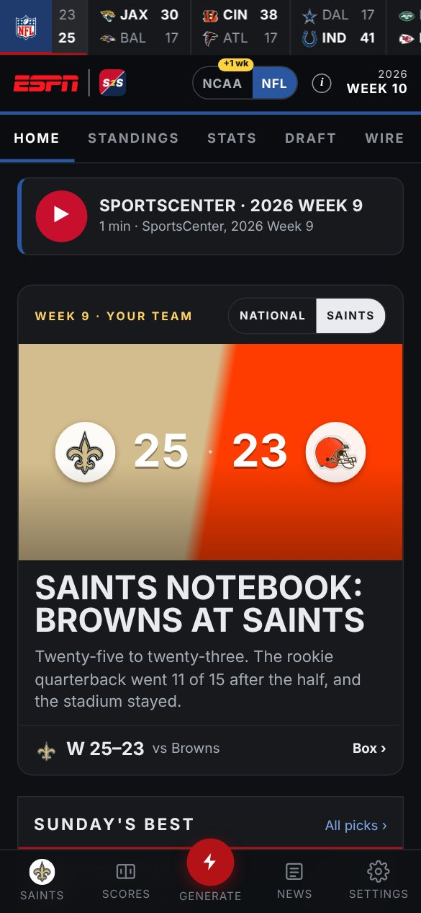
Your college dynasty and your NFL franchise, side by side, written up every week like a real sports page. The recruit you sign on Saturday is the rookie you draft on Sunday. Read it on your phone.
Windows · free · built on Zip’s Vintage ESPN App · your saves are only ever read
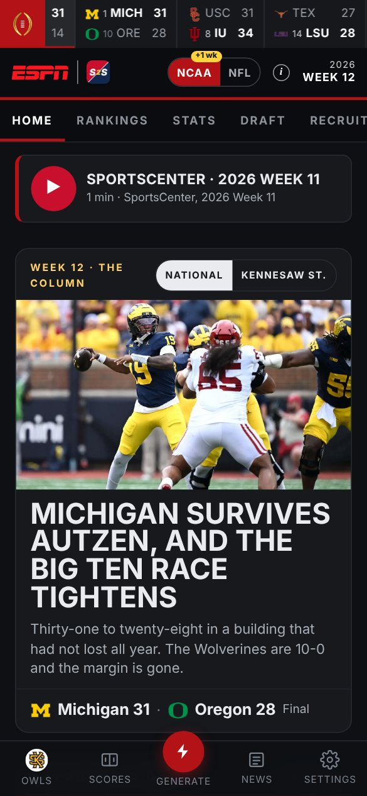
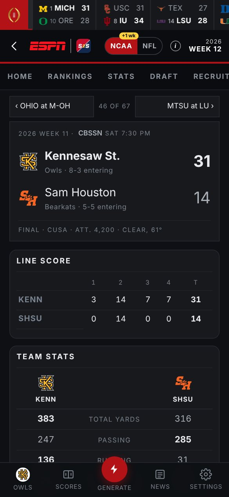
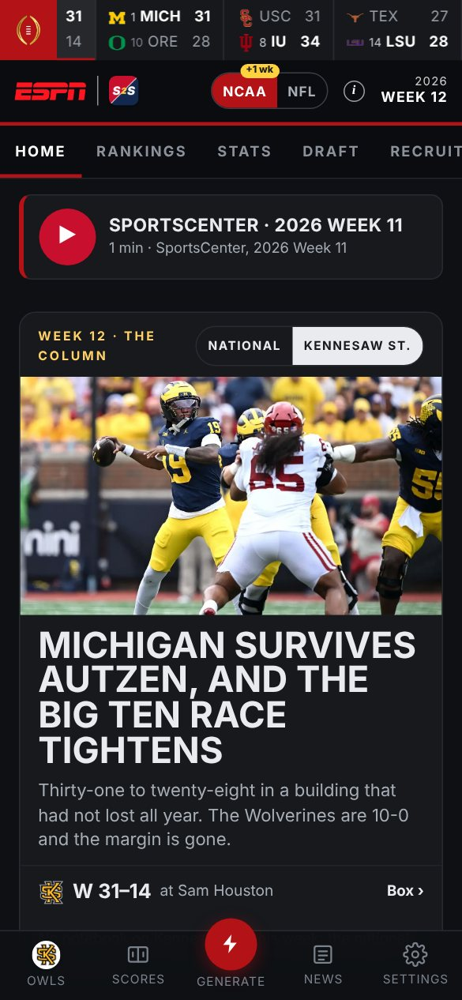
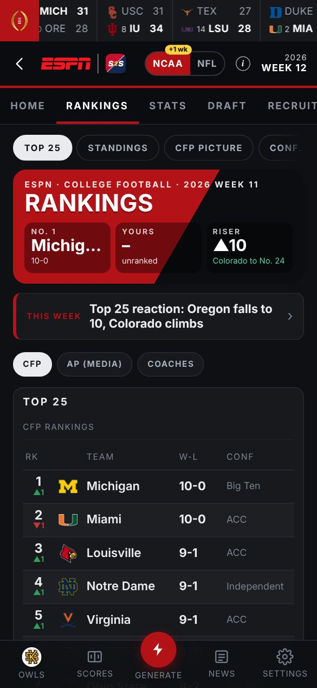
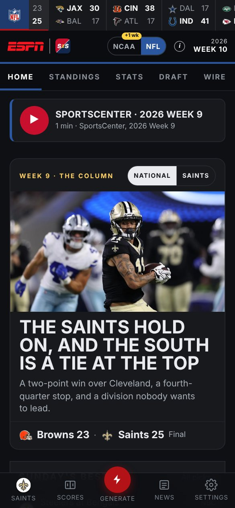
I’m 38 with three kids. I don’t have time to sim a season and then scroll through menus to find out what happened.
What I wanted the next morning was a paper: the front page, the scores, the column, the recruit who flipped, the rookie who just went in the first round. Written about my league, because it is my league.
When I saw what Zip built, I knew it was the foundation. He had done the hard part. I had to go above and beyond with it: add the Madden side, link the two games, and make the whole thing read like it was real.
JJ Founder, U-LUV Foods · Gamer, U-LUV Gaming

Who won the Super Bowl? Who won last year’s national title? You can be a fan of one league and never know the other exists. They run on their own. But the best players from one end up in the other, and that is where they meet.
Your CFB 27 dynasty: the poll, the playoff picture, recruiting, the portal, the carousel, your program’s money. Its own record book, its own history.
Your Madden 27 franchise: the standings, the power rankings, The Wire, the cap, the awards. Its own record book, its own history.
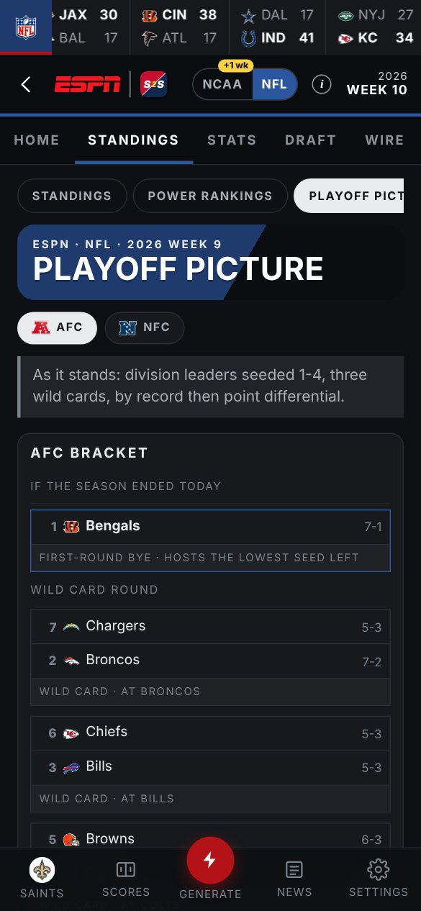
A hero story, the slate, the top five, your team, the week’s pieces. National, or flipped to your team with one switch.
Seasons, titles, classes and Halls of Fame for each league on its own, and the crossover between them: who you recruited, drafted, inducted.
Real game photographs for every program ship with the app. A club without one gets its colours. Nothing to set up.
A small app next to your saves. It reads them, never writes them, and writes the paper with a free ChatGPT account. Your phone just reads.
Both leagues, the same desks. Scores and box scores, rankings, the playoff picture, Your Team, the draft, recruiting on Saturday, The Wire and the cap on Sunday, stats and the awards on both.
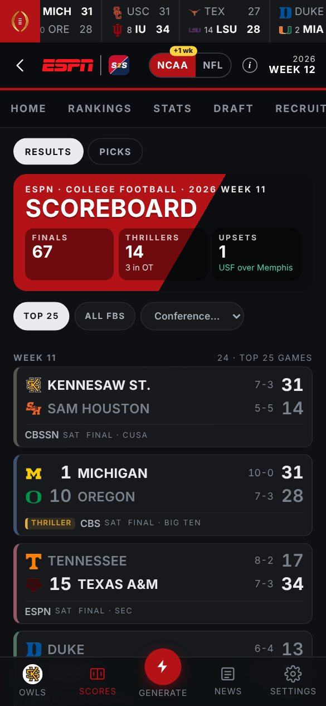
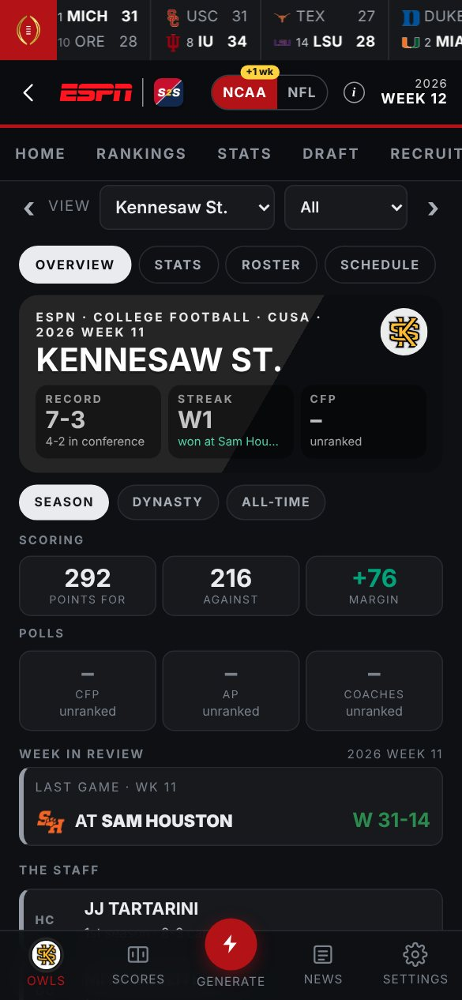
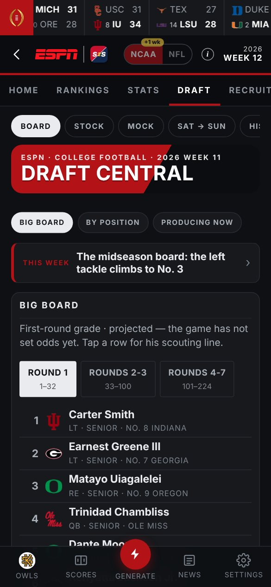
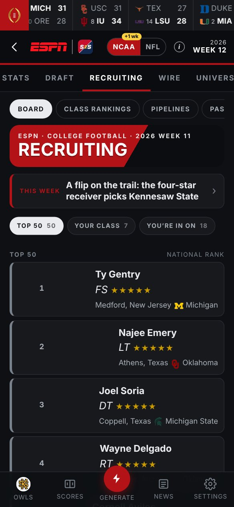
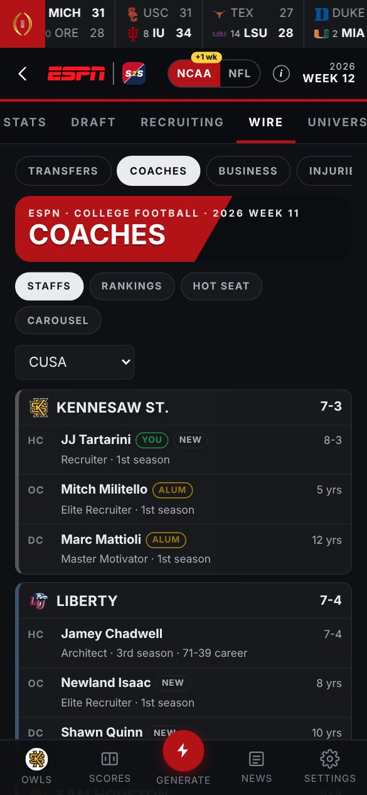
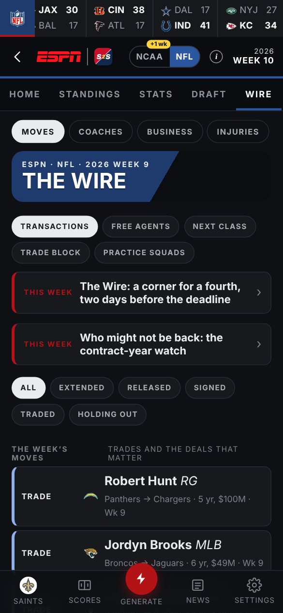
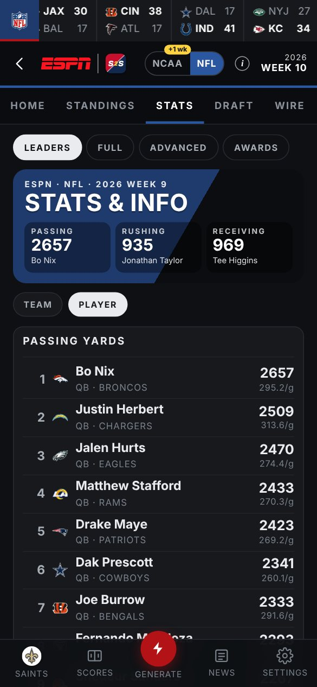
Next up: Front Office. You are the athletic director, or the owner. The paper covers every call you make.
The budget and where it goes. The boosters, who they are and what they want. Game day: the prices, the crowd, the gate. The stadium, phase by phase. The people you hire. A board that grades your year.
And what you build goes back into the game. Raise a stadium phase in S2S and the build order goes to your mod tools; the new seats are in the game on Saturday. Earn a facilities level and one tap writes it into your save, backed up and checked.
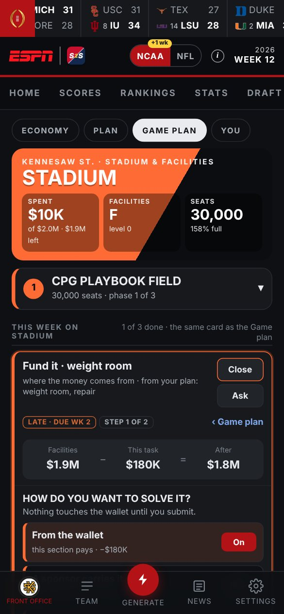
Same Wi-Fi as the PC. Settings ▸ On your phone shows a code; point the camera at it, tap the link, Add to Home Screen.
Install the free Tailscale app on the PC and the phone with the same account. S2S shows an Anywhere link: home, other Wi-Fi, cellular. Nothing goes on the internet.
Double-click S2S on the PC and leave it open while you read. Start with Windows keeps it running after a restart.
Free for personal use. Please don’t sell it or post it as your own.